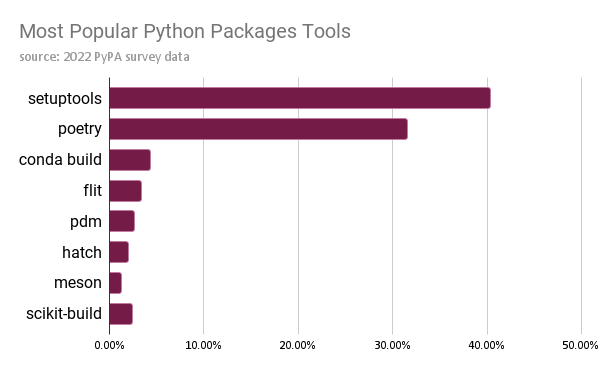

Jesus Caro's Blog
Jesus Caro's Blog
Fablr package development with Poetr- Dependency Management, Versioning and Publishing.
Wed 03 January 2024Introduction:
A short while ago I wrote an article detailing how to create, manage, and build your own development container using Docker, VSCode and GitHub Codespaces, as well as some cool tweaks that allow you to auto-install extensions, etc. In that article, I was working on a toy package I’m developing called *Fablr*. I also briefly touched upon creating a virtual environment using Poetry.
This article is a continuation on that article and details how you can leverage Poetry to create and manage a python package, as well as it’s dependencies, and ultimately how to publish it. There are several python packaging packages (pack-ception), that are available and commonly used across the python eco-system. However, Poetry and setuptools are the most commonly used python packaging tools, with **Poetry**** being the one I’m most familiar with.

Credit: Pyopensci.org
Outline:
In this article we won’t elaborate over every single apect of poetry, but we will detail what you need to get up and running to build your own package, manage it’s dependencies, and if you’re happy, ultimately publish your package.
To do this we’ll go over:
- What is Poetry and how does it work?
- How can you create a package?
- poetry-init
- How can you manage dependencies?
- adding dependencies
- pinning dependencies
poetry.lock
- Managing your project and using the virtual environment.
- virtual environments
- Building a wheel.
- Publish to PyPI, or your own private repo.
What is Poetry and how does it work?
As we previously mentioned, poetry is a python packaging tool that allows you to manage and track dependencies, create virtual environments, manage versioning, build, and publish your package.
Poetry works primarily by using two files that are created when you initialize your package using poetry new package_name . These files pyproject.toml and poetry.lock are what dictate which dependencies are installed, and how those dependencies get resolved. Furthermore, these files also dictate how poetry manages your virtual environment(s) that are automatically created when you initialize your package.
**NOTE ***USE A VIRTUAL ENVIORNMENT***: Before we start creating our repo it’s worth noting that poetry suggests you use an isolated environment (like it’s own virtual environment) so that poetry is isolated from the rest of your system. I would go even further and create a development container for your project, as we did in our previous article. This will make sure that you, and other contributors are developing on identical environments. To see how to do this, you can read my earlier article here.
How do you create a project?
First, we should create a directory and repo for our project. I named mine Fablr, and created a repo using GitHub. It’s public and you can find it here. After creating a dev container, and mounting an instance of VSCode to my dev container, all that was left was to install poetry using pip. ( I did this automatically using the postcreate.sh script that runs after creating my development container) protip: you should probably pin your poetry version if you’re using a similar method as well.
pip install poetry
Once poetry is installed, all that is left is to initialize your project, to initialize Fablr, all I did was run:
poetry new fablr
This created several files and a folder for me, with the following structure:
fablr
├── pyproject.toml
├── README.md
├── fablr
│ └── __init__.py
└── tests
└── __init__.py
You can verify this in your IDE:

Notice that poetry.lock hasn’t been created yet. That’s because we haven’t added any dependencies to our project. Let’s go ahead and do that.
How can you manage dependencies?
Adding a dependency
Since poetry performs several actions when you add, change, or remove dependencies, it’s better to create a virtual environment and activate that beforehand. As you can see, I have a virtual environment already created called faker-dev-venv (which is created automatically using the aforementioned postcreate.sh script). However, if you are not going that route, you can just go ahead and create a virtual enviornment yourself, ***activate it***, and run the following command:
python -m venv path/to/venv
Adding dependencies with Poetry is incredibly easy, as it resolves all dependencies for you. My package Fablr is really just a python API wrapper for faker . So that was one of the first dependencies I added to my project. Adding it was as easy as running:
poetry add faker==19.13.0
Note: I pinned Faker to 19.13.0, this is to avoid any issues with my wrapper and new versions of faker. If there are any issues while updating, I would want to be aware of them when updating, rather than re-building my enviornment with the latest version.
When you run this command a few things happen under the hood:
- The package is added to your project’s dependencies, and added to your
pyproject.tomlfile. If you don’t specify a version a “latest compatible version specifier” “^version_number” is designated inpyproject.toml. - Dependencies are resolved if there’s any and the added dependency and it’s sub-dependencies are recorded in the
poetry.lockfile. - Finally, the package is installed in the environment along with it’s dependencies (***so it’s ****important to have a virtual environment*** activated if you’re using one).
Removing a dependency
If you ever need to remove a dependency, it’s as easy as running:
poetry remove faker
Poetry will remove the dependency from your poetry.lock and pyproject.toml file, as well as uninstall it from your environment.
Dependency groups
In some cases, you might want to add a dependency that is only for development, or testing, and is not needed to actually run your package. In that case, you can leverage dependency groups in poetry. These allow you to separate different dependencies based on their context.
poetry add ruff --group dev
You can even declare these groups to be optional. In the example above, I added the ruff package to my dependencies, but in a group called dev. Making this group optional is as easy as denoting it in pyproject.toml.
[tool.poetry.group.dev]
optional = true
[tool.poetry.group.dev.dependencies]
ruff = "^0.1.7"
This makes the dev group completely optional, and will not be installed by default. To install with groups, you can run
poetry install --with dev
Pinning dependencies
In some instances you may also want to pin your dependencies, this helps make sure the deployments are repeatable, and you could avoid any potential issues with API discrepancies caused by backwards incompatibility, etc.
If we want to pin black to 23.11.0 , and add it to our dev group, all we have to do is run:
poetry add black==23.11.0 --group dev
Poetry.lock
Along with pyproject.toml, poetry.lock is one of the most important files for setting up all of your dependencies. Contained within it are all of the dependencies and versions that are essential for your project. When you run poetry add <package_name>, it not only adds the dependency to your pyproject.toml file but it also adds it to poetry.lock as well as all of *it’s* dependencies. So when you run poetry install to set up your environment, it doesn’t just install your dependencies, and it’s versions needed for your project, it also resolves and adds direct dependencies and their required versions.
Let’s take a look at a snippet of what was appended to poetry.lock when we added the black
formatting package:
[[package]]
name = "black"
version = "23.11.0"
description = "The uncompromising code formatter."
optional = false
python-versions = ">=3.8"
files = [
{file = "black-23.11.0-cp310-cp310-macosx_10_9_x86_64.whl", hash = "sha256:dbea0bb8575c6b6303cc65017b46351dc5953eea5c0a59d7b7e3a2d2f433a911"},
{file = "black-23.11.0-cp310-cp310-macosx_11_0_arm64.whl", hash = "sha256:412f56bab20ac85927f3a959230331de5614aecda1ede14b373083f62ec24e6f"},
{file = "black-23.11.0-cp310-cp310-manylinux_2_17_x86_64.manylinux2014_x86_64.whl", hash = "sha256:d136ef5b418c81660ad847efe0e55c58c8208b77a57a28a503a5f345ccf01394"},
{file = "black-23.11.0-cp310-cp310-win_amd64.whl", hash = "sha256:6c1cac07e64433f646a9a838cdc00c9768b3c362805afc3fce341af0e6a9ae9f"},
{file = "black-23.11.0-cp311-cp311-macosx_10_9_x86_64.whl", hash = "sha256:cf57719e581cfd48c4efe28543fea3d139c6b6f1238b3f0102a9c73992cbb479"},
{file = "black-23.11.0-cp311-cp311-macosx_11_0_arm64.whl", hash = "sha256:698c1e0d5c43354ec5d6f4d914d0d553a9ada56c85415700b81dc90125aac244"},
{file = "black-23.11.0-cp311-cp311-manylinux_2_17_x86_64.manylinux2014_x86_64.whl", hash = "sha256:760415ccc20f9e8747084169110ef75d545f3b0932ee21368f63ac0fee86b221"},
{file = "black-23.11.0-cp311-cp311-win_amd64.whl", hash = "sha256:58e5f4d08a205b11800332920e285bd25e1a75c54953e05502052738fe16b3b5"},
{file = "black-23.11.0-cp38-cp38-macosx_10_9_x86_64.whl", hash = "sha256:45aa1d4675964946e53ab81aeec7a37613c1cb71647b5394779e6efb79d6d187"},
{file = "black-23.11.0-cp38-cp38-macosx_11_0_arm64.whl", hash = "sha256:4c44b7211a3a0570cc097e81135faa5f261264f4dfaa22bd5ee2875a4e773bd6"},
{file = "black-23.11.0-cp38-cp38-manylinux_2_17_x86_64.manylinux2014_x86_64.whl", hash = "sha256:2a9acad1451632021ee0d146c8765782a0c3846e0e0ea46659d7c4f89d9b212b"},
{file = "black-23.11.0-cp38-cp38-win_amd64.whl", hash = "sha256:fc7f6a44d52747e65a02558e1d807c82df1d66ffa80a601862040a43ec2e3142"},
{file = "black-23.11.0-cp39-cp39-macosx_10_9_x86_64.whl", hash = "sha256:7f622b6822f02bfaf2a5cd31fdb7cd86fcf33dab6ced5185c35f5db98260b055"},
{file = "black-23.11.0-cp39-cp39-macosx_11_0_arm64.whl", hash = "sha256:250d7e60f323fcfc8ea6c800d5eba12f7967400eb6c2d21ae85ad31c204fb1f4"},
{file = "black-23.11.0-cp39-cp39-manylinux_2_17_x86_64.manylinux2014_x86_64.whl", hash = "sha256:5133f5507007ba08d8b7b263c7aa0f931af5ba88a29beacc4b2dc23fcefe9c06"},
{file = "black-23.11.0-cp39-cp39-win_amd64.whl", hash = "sha256:421f3e44aa67138ab1b9bfbc22ee3780b22fa5b291e4db8ab7eee95200726b07"},
{file = "black-23.11.0-py3-none-any.whl", hash = "sha256:54caaa703227c6e0c87b76326d0862184729a69b73d3b7305b6288e1d830067e"},
{file = "black-23.11.0.tar.gz", hash = "sha256:4c68855825ff432d197229846f971bc4d6666ce90492e5b02013bcaca4d9ab05"},
]
[package.dependencies]
click = ">=8.0.0"
mypy-extensions = ">=0.4.3"
packaging = ">=22.0"
pathspec = ">=0.9.0"
platformdirs = ">=2"
tomli = {version = ">=1.1.0", markers = "python_version < \"3.11\""}
typing-extensions = {version = ">=4.0.1", markers = "python_version < \"3.11\""}
[package.extras]
colorama = ["colorama (>=0.4.3)"]
d = ["aiohttp (>=3.7.4)"]
jupyter = ["ipython (>=7.8.0)", "tokenize-rt (>=3.2.0)"]
uvloop = ["uvloop (>=0.15.2)"]
We can see that several elements were added to the file, such as the package name, the pinned version, and some extra metadata. Furthermore, some sub dependencies were added too, such as click, pathspec, etc.
So, what’s important to note is that pyproject.toml is not the only file critical for your project. In other words, it’s not a glorified requests.txt file. What poetry does is use pyproject.toml in conjunction with the lock file to traverse and set up all the dependencies, their versions, and any sub dependencies, as well as resolving any dependency issues.
Managing your virtual environment
Using virtual environments in conjunction with poetry is pretty neat. You don’t need to install using any requirements.txt files. Let’s say you pull a repo that has been built using poetry, it contains pyproject.toml, poetry.lock , and you want to start developing straight away. You can create a virtual environment and activate it:
python -m venv path/to/venv
source path/to/venv/bin/activate
you should now see the virtual environment activated:
(faker-dev-venv) root@0cc23735c8a7:/workspaces/Fablr
All that’s left to do is run poetry install along with any group tags that may be necessary in your scenario.
poetry install
One cool feature of poetry is the ability to explicitly see dependency trees in your project. Using the following command, I was able to generate the dependency tree of my project. Here’s a quick snippet of it:
(faker-dev-venv) root@0cc23735c8a7:/workspaces/Fablr# poetry show --tree
black 23.11.0 The uncompromising code formatter.
├── click >=8.0.0
│ └── colorama *
├── mypy-extensions >=0.4.3
├── packaging >=22.0
├── pathspec >=0.9.0
├── platformdirs >=2
├── tomli >=1.1.0
└── typing-extensions >=4.0.1
datetime 5.3 This package provides a DateTime data type, as known from Zope. Unless you need to communicate with Zope APIs, you're probably better off using Python's built-in datetime module.
├── pytz *
└── zope-interface *
└── setuptools *
faker 19.13.0 Faker is a Python package that generates fake data for you.
├── python-dateutil >=2.4
│ └── six >=1.5
└── typing-extensions >=3.10.0.1
isort 5.13.0 A Python utility / library to sort Python imports.
├── pip-api *
│ └── pip *
├── pipreqs *
│ ├── docopt *
│ └── yarg *
│ └── requests *
│ ├── certifi >=2017.4.17
│ ├── charset-normalizer >=2,<4
│ ├── idna >=2.5,<4
│ └── urllib3 >=1.21.1,<3
└── requirementslib *
├── distlib >=0.2.8
├── pep517 >=0.5.0
│ └── tomli >=1.1.0
├── pip >=23.1
├── platformdirs *
├── plette *
│ ├── cerberus *
│ └── tomlkit *
├── pydantic *
│ ├── annotated-types >=0.4.0
│ │ └── typing-extensions >=4.0.0
│ ├── pydantic-core 2.14.5
│ │ └── typing-extensions >=4.6.0,<4.7.0 || >4.7.0 (circular dependency aborted here)
│ └── typing-extensions >=4.6.1 (circular dependency aborted here)
├── requests *
│ ├── certifi >=2017.4.17
│ ├── charset-normalizer >=2,<4
│ ├── idna >=2.5,<4
│ └── urllib3 >=1.21.1,<3
├── setuptools >=40.8
└── tomlkit >=0.5.3 (circular dependency aborted here)
******Building a wheel:********
Building a wheel in poetry is extremely easy, all you have to do is run:
poetry build
and you should see a directory be created in the root directory of your project called dist/, in that directory should should see both a name.tar.gz file as well as name.whl file. You can can use these files for testing.
Versioning
You are able to version in poetry by updating the first few lines in pyproject.toml. When you do this and run poetry build a new whl and tar file are dumped in the dist directory, while still keeping older versions of your wheel or tar files.
[tool.poetry]
name = "fablr"
version = "0.2.0"
description = ""
authors = ["Jesus Caro <jmcaro2@icloud.com>"]
readme = "README.md"
Publishing to PyPI:
When you’re finally ready to publish your package on PyPI, poetry can help streamline the process for you. First you have to register on PyPI and configure your credentials. PyPi requires you register on their website and retrieve an API token.
You can register it using the CLI by running:
poetry config pypi-token.pypi <APItoken>
Once registered, all you have to do is run:
poetry publish
It’s that easy.
Conclusion
To sum it up, this article served as a comprehensive guide to using Poetry for Python projects. It covered the essential steps from creating your project and dependency management to version control and packaging for distribution via PyPI. Poetry acted as a useful tool, making the entire process easier as well as allowing you to ensure the project is well-organized and ready for sharing. Armed with these insights, you can confidently utilize Poetry to efficiently manage your Python projects, making the process smoother and more organized.